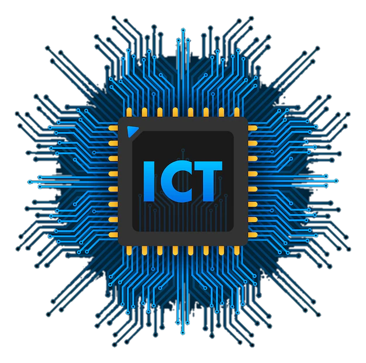 Interactive ICT Fun Facts
Introduction
Information and Communications Technology continues to evolve rapidly, shaping how people communicate, work, and access information. While many concepts in ICT are discussed in classrooms, there are several important facts and ideas that are often overlooked or briefly mentioned. This website aims to provide a deeper look into selected ICT-related topics in a clear and organized manner.
Project Description
This project is a student-created educational website designed to present extended ICT fun facts in a readable and engaging format. Each fact is explained in more detail to help students better understand the background, significance, and impact of various ICT developments. The content is intended for academic learning and reference purposes only.
Why This Topic Matters
Understanding ICT goes beyond knowing how to use tools and software. It also involves learning how technologies developed, why certain systems were created, and how they influence modern digital practices. By exploring these facts, students can gain broader knowledge that supports critical thinking and informed use of technology.
Fun Facts
1. The Internet Was Originally Designed for Communication During Emergencies
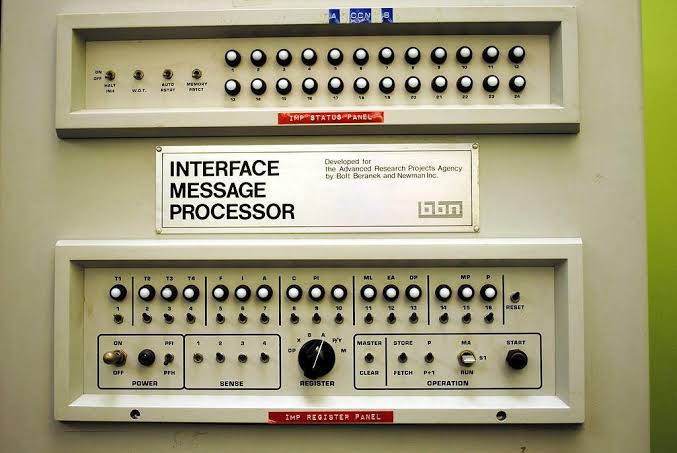The internet originated from the ARPANET project funded by the U.S. Department of Defense in the late 1960s. Its design focused on resilience, ensuring communication could continue even if certain network nodes were damaged or destroyed during emergencies, making it highly decentralized.
2. Email Existed Before Websites
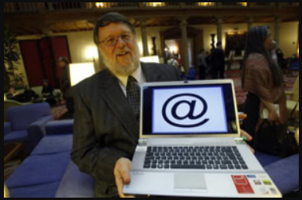Email was developed in the early 1970s, long before the World Wide Web. Ray Tomlinson sent the first networked email in 1971 and introduced the "@" symbol to separate the user's name from the host, a convention still used today.
3. The First Computer Bug Was a Real Insect
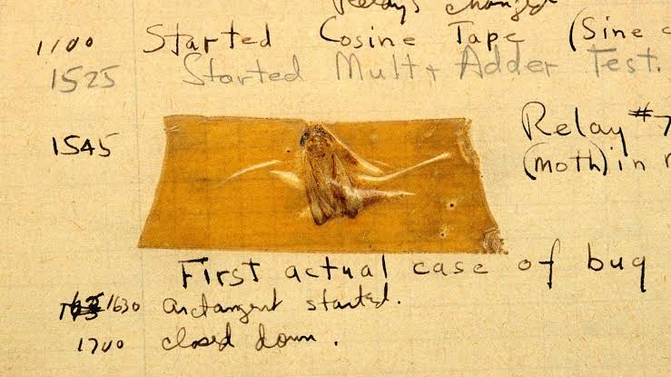In 1947, a moth caused a malfunction in the Mark II computer at Harvard University. Engineers taped the moth to their logbook, giving rise to the term “computer bug” as a reference to glitches and errors.
4. Passwords Were Invented in the 1960s
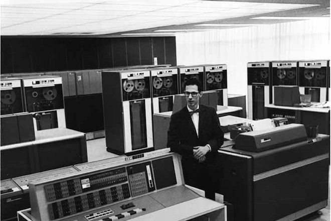Passwords were first used at MIT in 1961 as part of the Compatible Time-Sharing System (CTSS) by Fernando Corbató. Initially simple, passwords later evolved into complex combinations and encryption methods to secure access to sensitive data.
5. The First Website Is Still Online
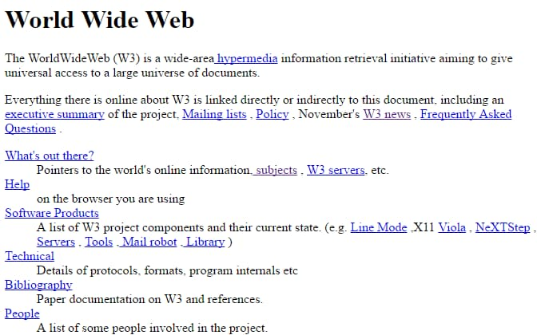The first website, launched in 1991 by Tim Berners-Lee at CERN, explained the World Wide Web project. It is still online as a historical reference for how the internet began.
6. Wi-Fi Does Not Stand for Anything
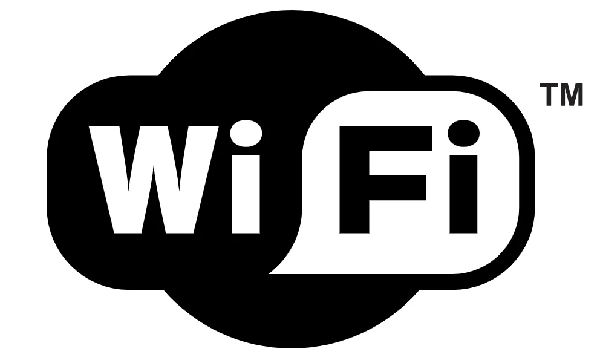Wi-Fi is a marketing brand created in 1999. Contrary to popular belief, it does not stand for “Wireless Fidelity” and was chosen simply to make wireless networking more recognizable to consumers.
7. The First Computer Mouse Was Made of Wood
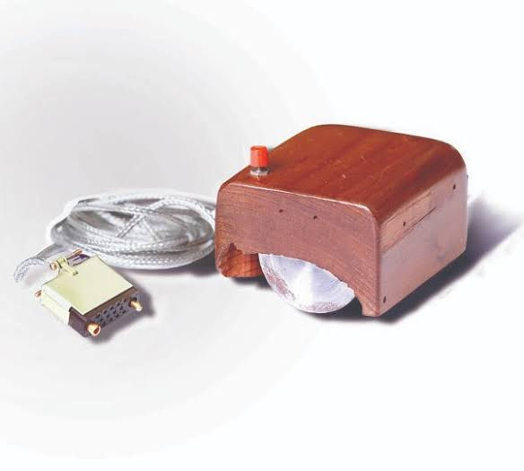Invented by Douglas Engelbart in 1964, the first mouse was wooden and had a single button. It revolutionized human-computer interaction and laid the foundation for graphical user interfaces.
8. Programming Languages Are Older Than Personal Computers
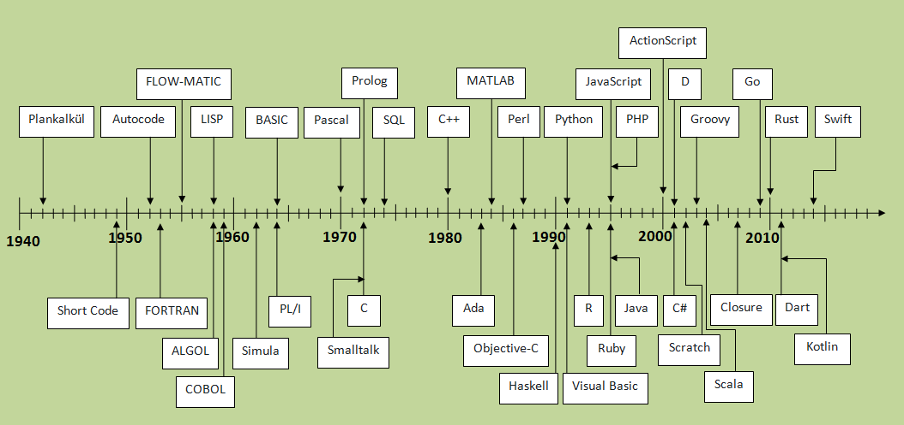Languages like FORTRAN and COBOL were developed before personal computers existed. They enabled programming on large mainframes and are still influential in computing today.
9. Data Is Measured in Very Large Units
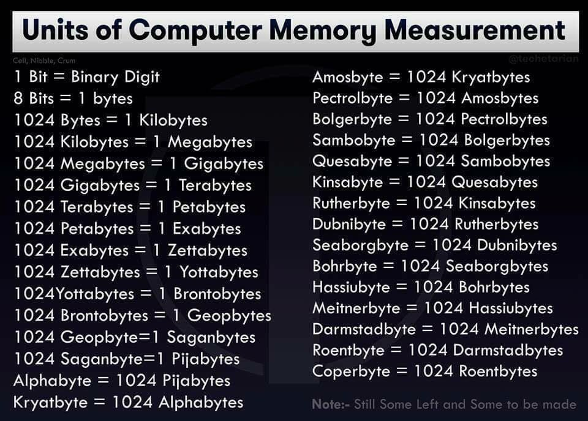Modern data measurement extends beyond gigabytes and terabytes to petabytes, exabytes, and zettabytes, reflecting the vast amounts of information generated daily by global digital activity.
10. The Cloud Is Made of Physical Servers
Cloud computing operates on real servers housed in data centers worldwide. These servers store and process information, allowing remote access to applications and data.
11. The First Domain Name Was Registered in 1985
Symbolics.com, registered on March 15, 1985, was the first domain name, initiating the domain name system that organizes internet addresses.
12. Early Computers Took Up Entire Rooms
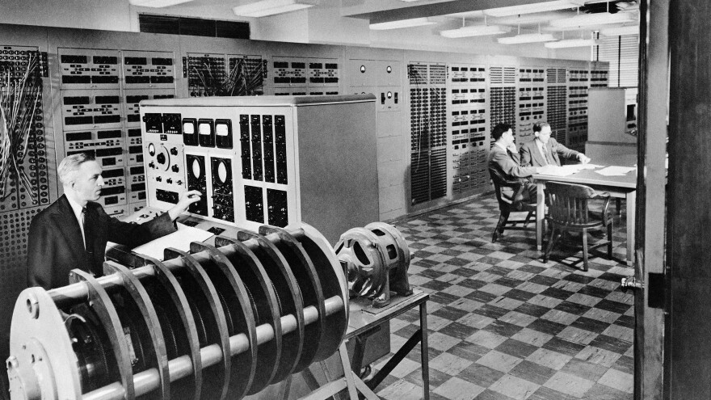Computers from the 1940s and 1950s were enormous, sometimes occupying entire rooms and requiring specialized cooling systems, highlighting the advancements in miniaturization over time.
13. The QWERTY Keyboard Was Designed to Slow Typing
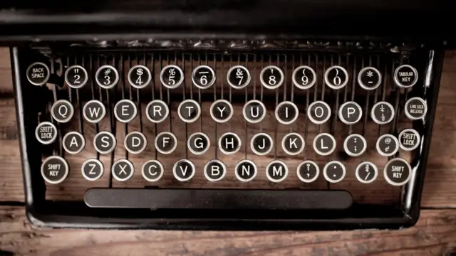The QWERTY layout was designed to prevent typewriter jams by spacing out commonly used letters. Despite modern keyboards no longer having mechanical issues, the layout remains standard worldwide.
14. Open-Source Software Is Built by Communities

Open-source projects like Linux and Mozilla Firefox are developed collaboratively by global communities, allowing free access, modification, and distribution of software.
15. Cybersecurity Became a Major Field Only Recently

Cybersecurity gained importance with the rise of the internet and digital services. Protecting sensitive data from hackers, malware, and cyberattacks is critical across all industries today.
16. Artificial Intelligence Has Been Studied Since the 1950s

AI research started with pioneers like Alan Turing and John McCarthy, focusing on problem-solving, learning, and reasoning. Modern AI now powers applications like image recognition, voice assistants, and autonomous systems.
17. The First Smartphone Was Released in the 1990s
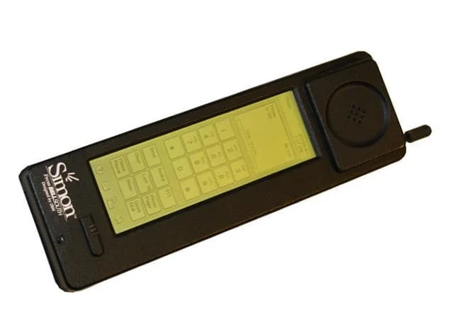The IBM Simon, launched in 1994, combined a mobile phone with computing functions and a touchscreen interface, paving the way for modern smartphones.
18. Internet Speed Has Increased Dramatically Over Time
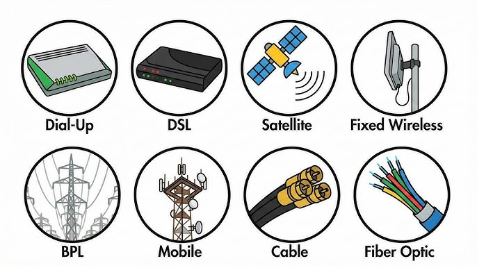Internet speed evolved from slow dial-up connections to high-speed fiber optic networks and 5G wireless systems, enabling fast communication, streaming, and cloud computing.
19. Digital Storage Keeps Getting Smaller
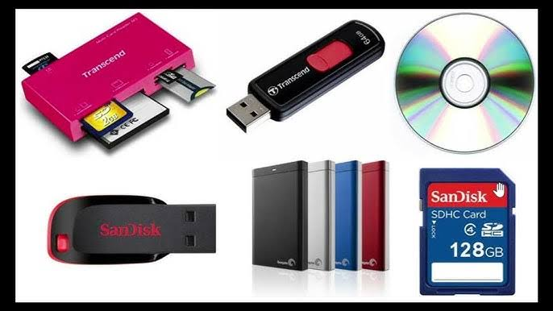Storage devices have shrunk from large magnetic tapes to tiny microSD cards while increasing capacity, allowing users to store massive amounts of data in compact formats.
20. ICT Influences Almost Every Industry Today
ICT drives innovation and efficiency in education, healthcare, finance, business, and entertainment, connecting people and enabling global access to knowledge.
Knowledge Check
After reading all the fun facts above, you may proceed to the quiz to test your understanding.
Proceed to QuizEducational Purpose
The primary purpose of this website is to support ICT learning by presenting additional information that may not be fully discussed in regular lessons.
Conclusion
ICT continues to grow and influence different aspects of society. By learning more about its background and lesser-known facts, students can develop a stronger appreciation for technology.